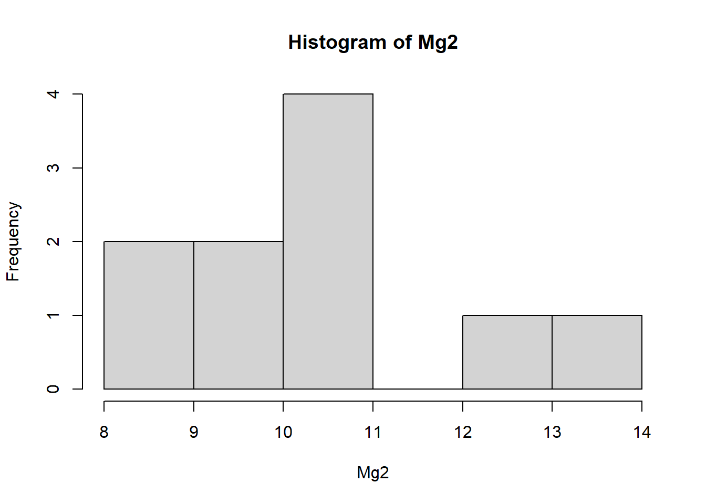

library(gsheet) # Importar dados do Google Sheets
library(dplyr) # Manipulação de dados (filter, select, pull, etc.)
library(tidyr) # Pivot_wider para transformar dados
library(ggplot2) # Gráficos com ggplot (usado via tidyverse ou separadamente)
library(ggpubr) # ggboxplot e stat_pvalue_manual para visualização e p-valor no gráfico
library(report) # Relatório interpretado do teste t
library(rstatix) # Funções de teste estatístico, como t_test()Testes de comparação entre dois grupos (Teste-t & teste de Wilcoxon pareado)
Teste-t
O teste t-Student, ou simplesmente teste-t, é o método mais utilizado para se avaliar as diferenças entre as médias entre dois grupos. É um teste de hipótese que usa conceitos estatísticos para rejeitar ou não uma hipótese nula quando a estatística de teste (t) segue uma distribuição t de Student.
As hipóteses formuladas em um teste-t comparam as médias entre dois grupos, podendo estas serem dependentes ou independentes.
Hipótese nula (Ho): a média do grupo 1 é igual a média do grupo 2
Hipótese alternativa (Ha): a média do grupo 1 é diferente da média do grupo 2
Tendo formulado as hipóteses, o teste-t irá calcular o valor de t e vai aplicá-lo à função densidade de probabilidade da distribuição t de Student medindo o tamanho da área abaixo dessa função para valores maiores ou iguais a t. Essa área representa a probabilidade da média dessa(s) amostra(s) em questão ter(em) apresentado o(s) valor(es) observado(s) ou algo mais extremo. Se a probabilidade desse resultado ter ocorrido for muito pequena, podemos concluir que o resultado observado é estatisticamente relevante. Essa probabilidade também é chamada de p-valor ou valor p.
Caso o nível de significância do p-valor for de 5% e a área abaixo da função densidade de probabilidade da distribuição t de Student seja menor do que 5%, pode-se afirmar que a hipótese nula é rejeitada com nível de confiança de 95%.
Note que não rejeitar a hipótese nula não é a mesma coisa que afirmar que a hipótese alternativa é válida com o mesmo nível de confiança. Isso seria uma interpretação incorreta do teste.
Importação de dados
O conjunto de dados foi importado do Google Sheet usando a função gsheet2tbl() do pacote gsheet. Nesse conjunto existem dois grupos independentes: um grupo de plantas em que foi aplicado Mg2 e um grupo de plantas controle (sem aplicação).
dat_mg <- gsheet2tbl("https://docs.google.com/spreadsheets/d/1bq2N19DcZdtax2fQW9OHSGMR0X2__Z9T/edit?gid=983033137#gid=983033137")Podemos observar que o conjunto de dados está no formato longo. Para o teste-t, é preciso que os dados estejam no formato largo, portanto eles serão transformados através da função pivot_wider().
Visualização inicial
Reorganização dos dados para Teste T
A transformação para formato largo com é necessária para testes que comparam variáveis emparelhadas.
Usou-se
pivot_wider()para transformar os dados de formato longo para largo, criando colunas separadas paracontroleMg2;Removeu-se a coluna
rep;Usou-se
attach()para facilitar o acesso direto às variáveisMg2econtrol.
library(dplyr)
dat_mg2 <- dat_mg |>
pivot_wider(names_from = trat, values_from = comp) |>
dplyr::select(-rep)
attach(dat_mg2)Teste T
Teste T básico com t.test
O teste t de Student compara médias de dois grupos independentes. A implementação padrão no R utiliza a correção de Welch, que não assume igualdade de variâncias, tornando-o robusto mesmo quando esse pressuposto é violado. A direção da comparação (grupo A vs B ou B vs A) não altera a magnitude da diferença, apenas o sinal do valor t.
- O segundo teste foi armazenado em
t_resultspara reutilização.
t.test(Mg2, control)
Welch Two Sample t-test
data: Mg2 and control
t = -8.1549, df = 17.354, p-value = 2.423e-07
alternative hypothesis: true difference in means is not equal to 0
95 percent confidence interval:
-6.490393 -3.825607
sample estimates:
mean of x mean of y
10.520 15.678 t_results <- t.test(control, Mg2)Relatório com report
report(t_results): gera uma descrição interpretada do teste, facilitando a compreensão dos resultados.
library(report)
report(t_results)Effect sizes were labelled following Cohen's (1988) recommendations.
The Welch Two Sample t-test testing the difference between control and Mg2
(mean of x = 15.68, mean of y = 10.52) suggests that the effect is positive,
statistically significant, and large (difference = 5.16, 95% CI [3.83, 6.49],
t(17.35) = 8.15, p < .001; Cohen's d = 3.65, 95% CI [2.14, 5.12])Teste T com rstatix
t_test(comp ~ trat, data = dat_mg): aplica o teste t com sintaxe mais legível.
library(rstatix)
test <- t_test(comp ~ trat, data = dat_mg)Visualização de dados com valor de p
Através do boxplot é possível assumir visualmente que os grupos seguem uma distribuição normal (pela simetria do boxplot formado) e que possuem variância homogênea (a estrutura dos dois boxplot são similares), mas os testes de premissas ainda devem ser feitos para confirmar.
ggboxplot()cria boxplots coloridos por grupo;stat_pvalue_manual()adiciona o valor-p diretamente no gráfico. A inclusão do valor-p no gráfico proporciona contexto imediato aos resultados estatísticos.
library(ggpubr)
p <- ggboxplot (
dat_mg, x = "trat", y = "comp", color = "trat", palette = "jco")
# Add the p-value manually
p + stat_pvalue_manual(test, label ="p", y.position = 18)+ylim(0,20)Salvar imagem
ggsave("plot2.png")Verificação de Pressupostos do Teste T
Antes de aplicar o teste t, é importante garantir que os dados sigam seus pressupostos:
Normalidade
Os testes de normalidade (Shapiro-Wilk) avaliam formalmente se a distribuição dos dados desvia-se significativamente da distribuição normal. Esta verificação é crucial porque o teste t assume que os resíduos seguem distribuição normal. Porém, em amostras pequenas (<30 observações), esses testes têm baixo poder estatístico, sendo mais informativos os diagnósticos visuais como QQ-plots e histogramas.
shapiro.test(Mg2)eshapiro.test(control)testam se os dados têm distribuição normal;hist()permite ver graficamente a forma da distribuição.
shapiro.test(Mg2)
Shapiro-Wilk normality test
data: Mg2
W = 0.97269, p-value = 0.9146shapiro.test(control)
Shapiro-Wilk normality test
data: control
W = 0.93886, p-value = 0.5404hist(Mg2) 
hist(control)
Homogeneidade de variâncias
O teste F de variâncias verifica a homocedasticidade (igualdade de variâncias entre grupos), pressuposto essencial para o teste t clássico. Quando rejeitado (p < 0.05), recomenda-se manter o teste t de Welch, que é robusto a heterocedasticidade. Alternativamente, o teste de Levene é menos sensível a desvios de normalidade.
var.test(dat_Mg2, control)verifica se os dois grupos possuem variâncias semelhantes, o que é esperado no teste t clássico.
var.test(dat_mg2$Mg2, dat_mg2$control)
F test to compare two variances
data: dat_mg2$Mg2 and dat_mg2$control
F = 1.4781, num df = 9, denom df = 9, p-value = 0.5698
alternative hypothesis: true ratio of variances is not equal to 1
95 percent confidence interval:
0.3671417 5.9508644
sample estimates:
ratio of variances
1.478111 Se esses pressupostos não forem atendidos, outras abordagens são necessárias (ex: teste de Wilcoxon).
Teste T pareado (Escala)
Em desenhos experimentais com medidas repetidas (como “antes-depois”), o teste t pareado considera a correlação intrínseca entre as observações, aumentando o poder estatístico. O teste de Wilcoxon pareado (não-paramétrico) é alternativa quando os pressupostos de normalidade não são atendidos, comparando medianas em vez de médias.
Importação e visualização de dados
escala <- gsheet2tbl("https://docs.google.com/spreadsheets/d/1bq2N19DcZdtax2fQW9OHSGMR0X2__Z9T/edit?gid=1729131173#gid=1729131173")
escala |> ggplot(aes(assessment, acuracia)) + geom_boxplot()
Apenas pelo gráfico é possível observar que a estutura dos dois grupos é diferente um do outro, podendo indicar variâncias heterogêneas.
A função pivot_wider() foi usada para transformar o conjunto de dados de formato longo para formato largo.
escala2 <- escala |>
dplyr::select(assessment, rater, acuracia) |>
tidyr::pivot_wider(names_from = assessment, values_from = acuracia)Teste de premissas
Foi usada a função shapiro.test() para cada grupo para determinar se eles seguem normalidade ou não.
shapiro.test(escala2$Unaided)
Shapiro-Wilk normality test
data: escala2$Unaided
W = 0.7748, p-value = 0.007155shapiro.test(escala2$Aided1)
Shapiro-Wilk normality test
data: escala2$Aided1
W = 0.92852, p-value = 0.4335Como p > 0.05 (neste caso, p = 0.4335), não rejeitamos a hipótese nula. O teste diz que os dados da coluna
Aided1não estão muito distantes de uma curva normal, então pode-se, em geral, usar testes paramétricos (como o teste t) com essa variável.Como p < 0.05 (neste caso, p = 0.007), rejeitamos a hipótese nula. Os dados da variável
Unaidednão têm uma distribuição normal. Portanto, para realizar testes estatísticos envolvendo essa variável, deve-se considerar o uso de testes não paramétrico.Em seguida foi realizado o teste de variância pela função
var.test().var.test(escala2$Unaided, escala2$Aided1)F test to compare two variances data: escala2$Unaided and escala2$Aided1 F = 20.978, num df = 9, denom df = 9, p-value = 0.000106 alternative hypothesis: true ratio of variances is not equal to 1 95 percent confidence interval: 5.210754 84.459185 sample estimates: ratio of variances 20.97847
- Como p < 0.05, rejeitamos a hipótese nula. Os dados mostram que a dispersão (variação) dos valores em
Unaidedé muito maior do que emAided1, e essa diferença é estatisticamente significativa.
Teste-t pareado
Para este caso de conjunto de dados onde os dois grupos são dependentes e apresentam variâncias heterogêneas, o teste-t é realizado com a função t.test() usando os argumentos paired = TRUE e var.equal = FALSE.
t_test(acuracia ~ assessment, data = escala, paired = TRUE, var.equal = FALSE) # A tibble: 1 × 8
.y. group1 group2 n1 n2 statistic df p
* <chr> <chr> <chr> <int> <int> <dbl> <dbl> <dbl>
1 acuracia Aided1 Unaided 10 10 4.42 9 0.00167Como o p-valor foi inferior ao nível de significância, rejeitamos a hipótese nula de que os dois grupos são iguais.
Análise separada dos grupos
escalafoi importado comgsheet2tbl().t_test(acuracia ~ assessment, paired = TRUE): compara a acurácia com e sem intervenção.ggplotcomgeom_boxplot()mostra visualmente essa comparação;unaidedeaidedforam criados comfilter()epull().Aplicaram-se testes de normalidade (
shapiro.test()), variância (var.test()), seguido de:t.test(unaided, aided, paired = TRUE)wilcox.test(unaided, aided = FALSE): caso não haja normalidade (teste não paramétrico).
# Carregar pacotes necessários
library(dplyr)
# Separar os vetores de acurácia para os dois tipos de avaliação
unaided <- escala |>
dplyr::filter(assessment == "Unaided") |>
dplyr::select(acuracia) |>
dplyr::pull()
aided <- escala |>
dplyr::filter(assessment == "Aided1") |>
dplyr::select(acuracia) |>
dplyr::pull()
# Teste F para comparar variâncias
var.test(unaided, aided)
F test to compare two variances
data: unaided and aided
F = 20.978, num df = 9, denom df = 9, p-value = 0.000106
alternative hypothesis: true ratio of variances is not equal to 1
95 percent confidence interval:
5.210754 84.459185
sample estimates:
ratio of variances
20.97847 # Testes de normalidade (Shapiro-Wilk)
shapiro.test(unaided)
Shapiro-Wilk normality test
data: unaided
W = 0.7748, p-value = 0.007155shapiro.test(aided)
Shapiro-Wilk normality test
data: aided
W = 0.92852, p-value = 0.4335# Teste t pareado (sem assumir variâncias iguais)
t.test(unaided, aided, paired = TRUE, var.equal = FALSE)
Paired t-test
data: unaided and aided
t = -4.4214, df = 9, p-value = 0.001668
alternative hypothesis: true mean difference is not equal to 0
95 percent confidence interval:
-0.3552353 -0.1147647
sample estimates:
mean difference
-0.235 # Teste de Wilcoxon pareado (alternativa não paramétrica ao t pareado)
wilcox.test(unaided, aided, paired = TRUE)
Wilcoxon signed rank test with continuity correction
data: unaided and aided
V = 0, p-value = 0.005889
alternative hypothesis: true location shift is not equal to 0Foi realizada uma comparação entre os desempenhos nas condições unaided (sem ajuda) e aided (com ajuda) utilizando dados de acurácia. Inicialmente, o teste de Shapiro-Wilk indicou que os dados da condição unaided não seguem uma distribuição normal (p = 0,007), enquanto os dados da condição aided não apresentaram evidência significativa de desvio da normalidade (p = 0,433), sugerindo distribuição aproximadamente normal.
Em seguida, o teste F para comparação de variâncias revelou que as variâncias entre as duas condições são significativamente diferentes (p = 0,0001), com a variância da condição unaided sendo consideravelmente maior. Esse resultado viola o pressuposto de homogeneidade de variâncias necessário para alguns testes paramétricos.
Apesar disso, o teste t pareado, que compara as médias das duas condições assumindo pares de medidas (por exemplo, do mesmo indivíduo), indicou uma diferença estatisticamente significativa entre unaided e aided (p = 0,0017). A média da acurácia foi maior na condição aided, com uma diferença média de aproximadamente 0,235 unidades, indicando melhora no desempenho com o uso da ajuda.
Como a distribuição dos dados da condição unaided não é normal e há diferença de variâncias, foi também realizado o teste de Wilcoxon pareado, que é uma alternativa não paramétrica ao teste t. Esse teste também indicou uma diferença significativa entre as duas condições (p = 0,0059), confirmando que os participantes apresentaram desempenho significativamente melhor na condição aided.
Em conjunto, os resultados sugerem de forma robusta que o uso de ajuda (condição aided) melhora significativamente a acurácia em relação à condição sem ajuda (unaided), mesmo considerando a ausência de normalidade e a diferença de variâncias nos dados.